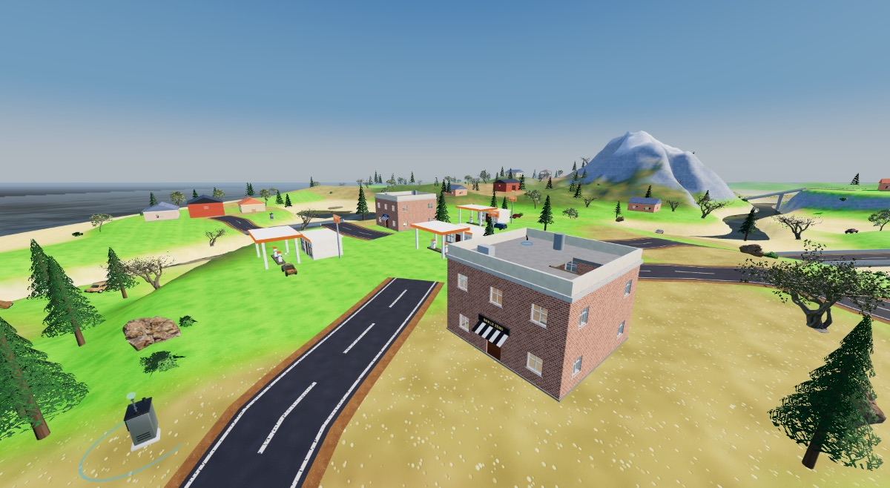
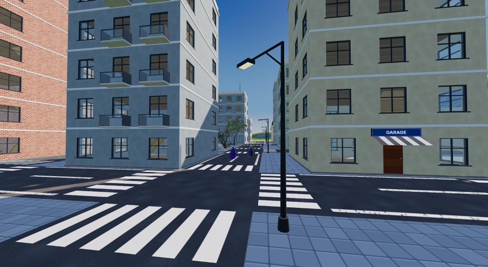
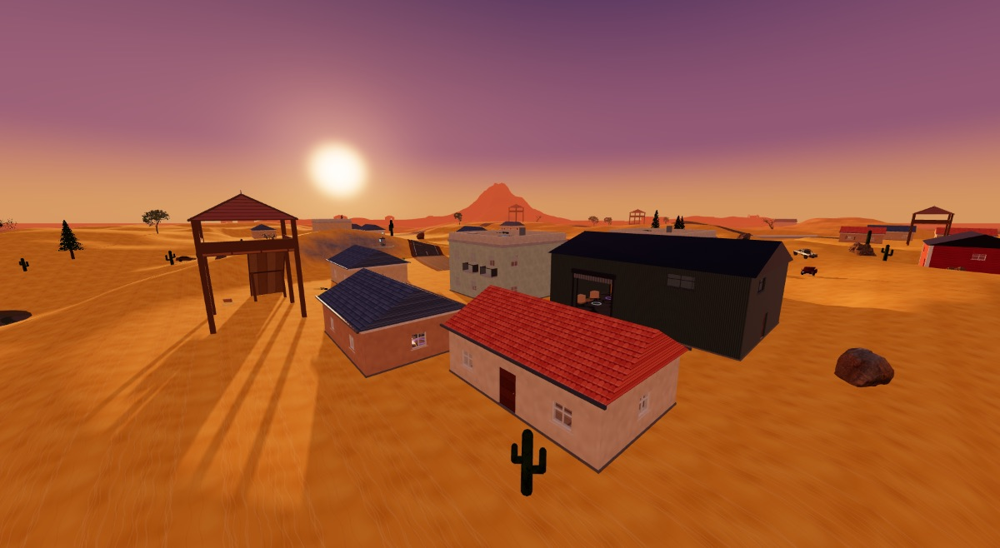
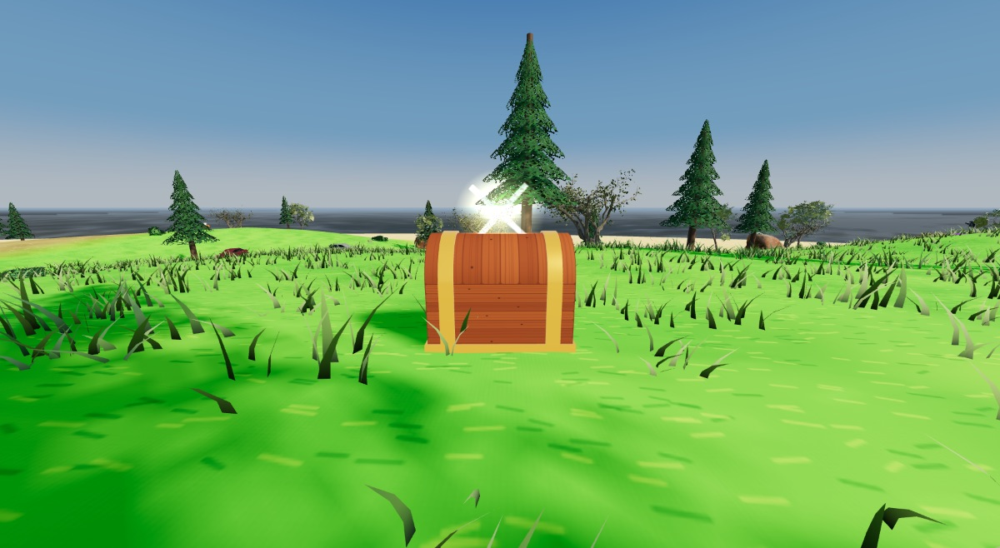
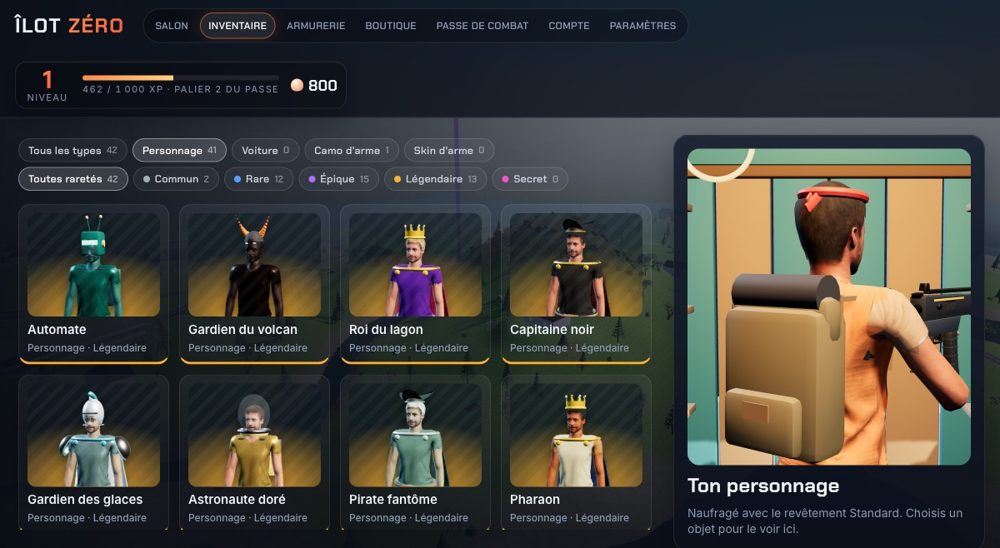

20 combattants sautent sur l'île. La zone se referme. Un seul repart. Un battle royale en 3D gratuit, en solo ou entre amis.
Un style cartoon coloré (ou réaliste, au choix dans les paramètres), des villages, une grande ville et un désert.





Tout est gratuit. Ta progression est sauvegardée sur ton compte Google et suit sur le site comme dans l'application.
L'Îlot et ses villages, la Métropole et ses tours, les Dunes du désert. Routes, ponts, voitures et 20 combattants.
Des coffres dorés qui scintillent et tintent. Ouvre-les avec E pour une arme rare, des munitions et des soins.
Pistolets, fusils, snipers, lance-roquettes, arbalète… avec viseurs, silencieux et chargeurs à choisir dans l'armurerie.
Murs, sols et rampes en bois, brique ou métal pour te protéger ou prendre de la hauteur. Même les voitures montent dessus.
Crée un salon, donne le code à 4 lettres à tes amis : solo, duo ou escouade, avec ou sans bots.
Saison 2 « Abysses » : une récompense à chaque palier, des tenues et des skins exclusifs.
Conduis sur les routes, saute des bosses, écrase les constructions… et débloque des skins de voiture secrets.
Touches modifiables, sensibilité par viseur, style cartoon ou réaliste, ramassage et portes automatiques.
L'application de bureau donne les meilleures performances. Le bon fichier pour ton ordinateur est mis en avant.
Installation classique : un raccourci est créé sur le bureau. Windows 10 ou 11, 64 bits.
Installateur .exeRien à installer : lance directement le fichier. Pratique sur une clé USB.
Version portable .exePour les Mac avec puce M1, M2, M3 ou M4 (la plupart des Mac depuis fin 2020).
Mac M1 à M4 (.dmg)Pour les Mac plus anciens avec processeur Intel. Menu → À propos de ce Mac pour vérifier.
Mac Intel (.dmg)L'application n'est pas signée par Apple ni Microsoft (c'est payant) : ton ordinateur affiche donc un avertissement la première fois. C'est normal, voici comment passer.
Pour mettre à jour, télécharge simplement la nouvelle version ici et installe-la par-dessus : ta progression est sur ton compte, rien n'est perdu.
Toutes modifiables dans Paramètres → Touches.
| Z Q S D | Se déplacer |
| Maj Espace | Sprinter, sauter |
| Clic gauche / droit | Tirer, viser |
| 1 à 4 | Pioche et armes |
| E | Ramasser, ouvrir un coffre, une porte, conduire |
| F C V | Construire un mur, un sol, une rampe |
| H | Se soigner |
| M | Grande carte |
Le jeu s'adapte : baisse le préréglage graphique si ça rame.
| Système | Windows 10/11 64 bits, macOS 11 ou plus récent |
| Processeur | 4 cœurs conseillés |
| Mémoire | 4 Go minimum, 8 Go conseillés |
| Carte graphique | Compatible WebGL 2 (presque toutes depuis 2015) |
| Espace disque | Environ 400 Mo |
| Internet | Pour le compte et le multijoueur |
Une autre question ? Ouvre une discussion sur la page GitHub du jeu.
Oui, entièrement. Les coquillages (la monnaie du jeu) se gagnent en jouant, il n'y a rien à acheter avec de l'argent réel.
Oui, une connexion avec Google. Elle sert à sauvegarder ton niveau, tes coquillages, tes tenues et tes amis, sur le site comme dans l'application.
Dans le Salon, clique sur « Créer un salon » et donne le code à 4 lettres à tes amis, qui l'entrent dans « Rejoindre ». Tout le monde doit avoir la dernière version (ou jouer sur le site).
C'est le même jeu. L'application est souvent plus fluide et s'ouvre sans navigateur ; le site ne demande aucune installation et est toujours à jour.
L'application n'est pas signée (la signature coûte cher), d'où l'avertissement. Suis les étapes de la partie « Installer pas à pas ». Le code source est public sur GitHub.
Dans Paramètres → Graphismes, choisis le préréglage « Moyen » ou « Bas », baisse la distance d'affichage ou l'échelle de rendu, et ferme les autres applications lourdes.
Rejoins l'île tout de suite dans ton navigateur, ou installe l'application.